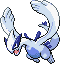
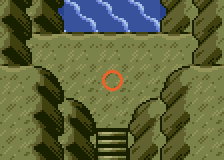
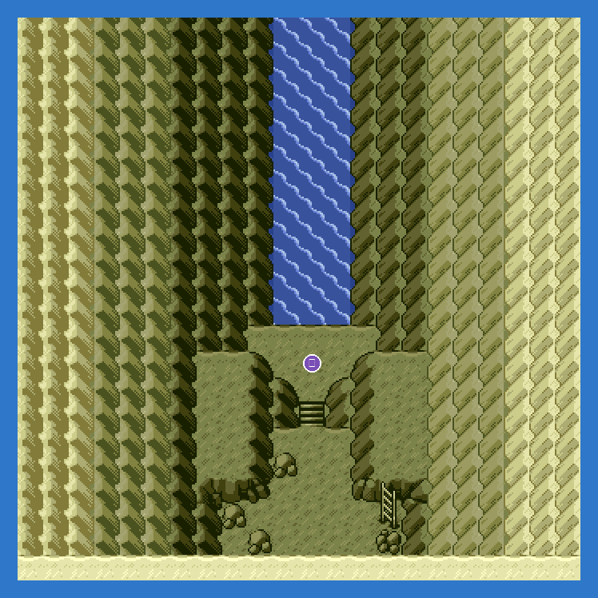

Mystic Ticket from the Concierge, ferry from Lilycove Harbor. From the fork inside Navel Rock take the stairs down eleven rooms to the sea cave.
Emerald's own event, unchanged.
Side quest "The ferry tickets: Southern Island, Mew, Deoxys, Ho-Oh and Lugia": Navel Rock Bottom.
